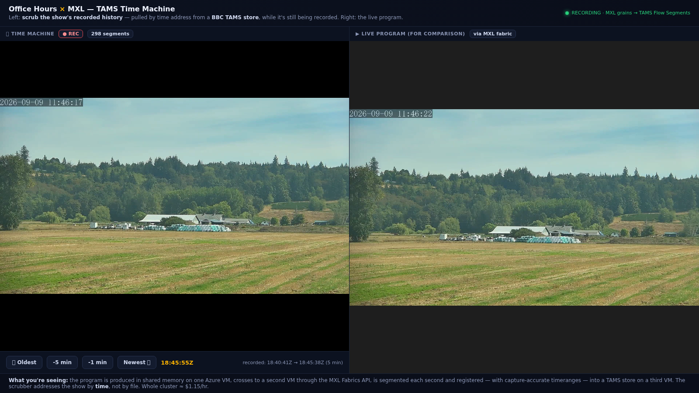

MXL Switcher
An uncompressed broadcast production facility
that runs entirely in the cloud.
Built on the EBU's MXL shared-memory SDK · IBC 2026 week · mxlswitcher.com
THE IDEAWhat if the control room had no hardware?
- Traditional switching lives in dedicated silicon — SDI crossbars, ASIC compositors.
- The EBU's MXL project moves uncompressed video as shared-memory grains between processes — the data plane for a software facility.
- The bet: build a real, operator-driven switcher — cameras, guests, graphics, layouts, recording — as pure software on cloud VMs. No compression shortcuts.
- Give anyone a URL and let them cut a live show from a browser.
ARCHITECTUREThree cloud VMs, one uncompressed pipeline
CONTRIBUTION (VM2) PRODUCTION (VM1, 32 vCPU) VIEWERS
┌────────────────┐ ┌──────────────────────────┐
│ guest SRT in │ MXL │ /dev/shm MXL domain │ WebRTC
│ (Larix / phone)│ ═fabric═▶ │ v210 uncompressed │ ═══════▶ browser
│ fabric leg │ 1.3Gbps │ selector → layout → keyer│ mxlswitcher.com
└────────────────┘ │ → H.264 encode (once) │
studio cams ═SRT═══════════▶│ │
│ program ═fabric═▶ TAMS ══│═▶ S3 record / clip
└──────────────────────────┘
Every box is generic compute. The video never touches a codec until the final viewer encode — that's the whole point.
IT WORKS — AND IT'S FASTMeasured, not claimed
20–30ms
hard cut · 100/100 soak
~150ms
SuperSource pane change
1.3Gbps
uncompressed fabric / flow
Frame-accurate TAMS clips verified against burned SMPTE timecode. Cuts that land even while the rig is self-healing in the background.
THE SWITCHERA browser control room
- PGM / PVW buses with take & flip-flop
- SuperSource matrix — 2-up / PiP / 4-up, tap = take
- HTML5 keyer — graphics composited in the cloud
- Guest contribution — scan a QR, you're an input
- Per-input audio mixer with mix-minus commentary
RECORD & CLIPMXL meets TAMS — the EBU's two projects, united


- Live program segmented to TAMS every second → S3.
- Scrub a 12-hour time machine in the browser.
- Mark in/out, frame-accurate export, take the clip home.
- The DMF white paper listed MXL↔TAMS as an open topic. We built it.
CONTROL, STANDARDIZEDNMOS discovery + a hardware panel
- Every flow published as NMOS per AMWA BCP-007-03 (urn:x-nmos:transport:mxl)
- Discovered live by Bitfocus Buttons — a commercial controller browsing a cloud MXL facility.
- Stream Deck XL cutting the show with real red/green tally.
- First MXL facility in an NMOS registry, to our knowledge — 3 days after IBC.
THE HONEST PARTWhat early-adopter production actually takes
- MXL v1.1.0 has a reader-lifecycle bug — readers wedge when a flow is recreated. We found five variants, characterized each, and reported upstream.
- Every workaround is labeled and mapped to the fix it stands in for: warm-up line-up, repair cascade, flow stabilizer, self-heal doctors.
- We shipped mistakes and caught them in our own logs — the field notes say so.
- docs/FIELD-NOTES.md — the report a first production deployment owes its SDK community.
IT'S PORTABLEThe cloud doesn't matter
- Ran on Azure for IBC. A complete AWS production plan is in the repo: two-VPC design, native-S3 TAMS, ~$56 to first show.
- Same
tools/, same bring-up-mxl.sh — only the infrastructure vocabulary changes.
- One-command QUICKSTART: fresh Ubuntu VM → cuttable keyed switcher in ~10 minutes.
github.com/guycochran/mxl-cloud-production-demo
The difference between
a demo and a facility
Uncompressed cloud production · self-healing · recorded · standards-controlled.
Built in a week on a brand-new SDK — and documented honestly.
mxlswitcher.com · github.com/guycochran/mxl-cloud-production-demo